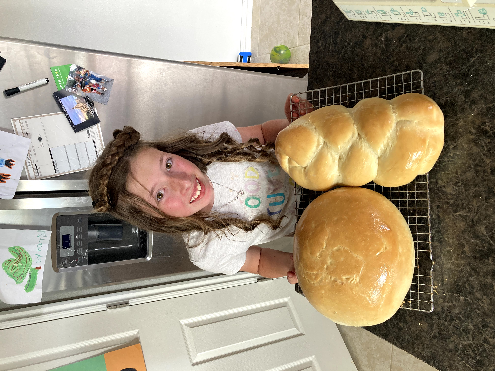

Enjoy Homemade Bread?
Lucy's Loaves Has Everything You'll Ever Need!
About Us

Easier Access
This site is a way for patrons of Lucy’s Loaves to have easier access to her products, and to make it easier for them to pay her for her services. It is meant to help make Lucy’s Loaves more widely available and more widely known. It is meant to support Lucy and her business and to spread awareness that this wonderful business and these incredible products exist and that they are available to be bought.
Mission
Lucy’s Loaves goal as a business is to provide delicious homemade bread to those who want it. The mission of the owner is to help people have access to these things, and to provide only products that are of the highest quality. Lucy herself does this because she loves to bake, and has been doing it since she was very small. More recently she decided that she wanted to share her love of baking with others, and she started to sell her products off of Facebook. The goal of this website is to help her continue to share that love, and to be able to do it in a way that is much more widespread.